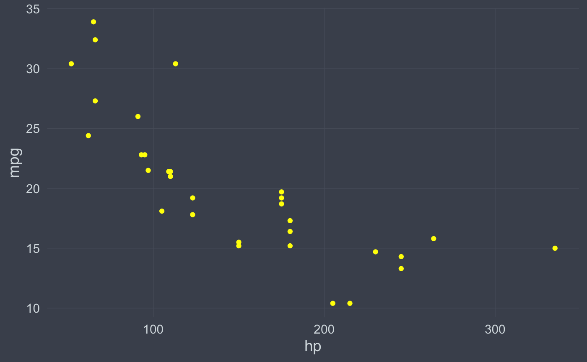
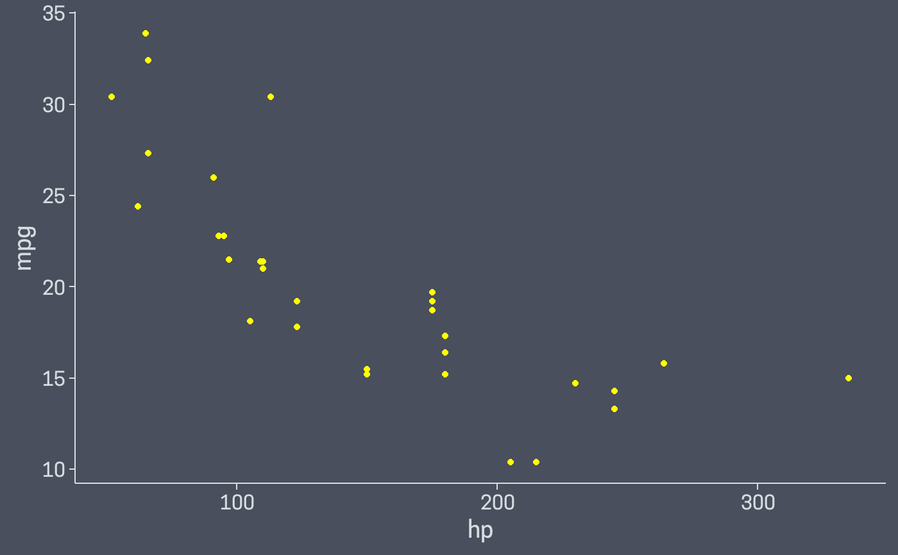
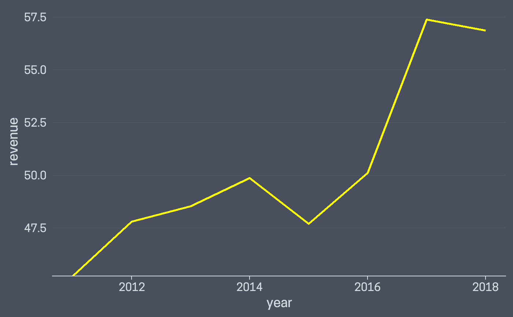

A ggplot2 theme inspired by the 'hermit' Hugo theme
theme_hermit( base_size = 14, base_family = "", axis = "", ticks = "", grid = "" )
Arguments
| base_size |
|
|---|---|
| base_family |
|
| axis |
|
| ticks |
|
| grid |
|
Value
An object of class theme
See also
For more details see the 'theme' vignette:
vignette("theme", package = "ggcharts")
Examples
library(ggplot2) library(dplyr) scatter <- ggplot(mtcars, aes(hp, mpg)) + geom_point(color = "yellow") scatter + theme_hermit()scatter + theme_hermit(grid = "XY")scatter + theme_hermit(axis = "xy", ticks = "xy")column_chart(ggplot2::diamonds, cut, bar_color = "darkorange") + theme_hermit(axis = "x", grid = "X")ggcharts::biomedicalrevenue %>% filter(company == "Roche") %>% ggplot(aes(year, revenue)) + geom_line(color = "yellow", size = 1) + scale_y_continuous(expand = expand_scale(c(0, .05))) + theme_hermit(grid = "X", axis = "x", ticks = "x")#> Warning: `expand_scale()` is deprecated; use `expansion()` instead.